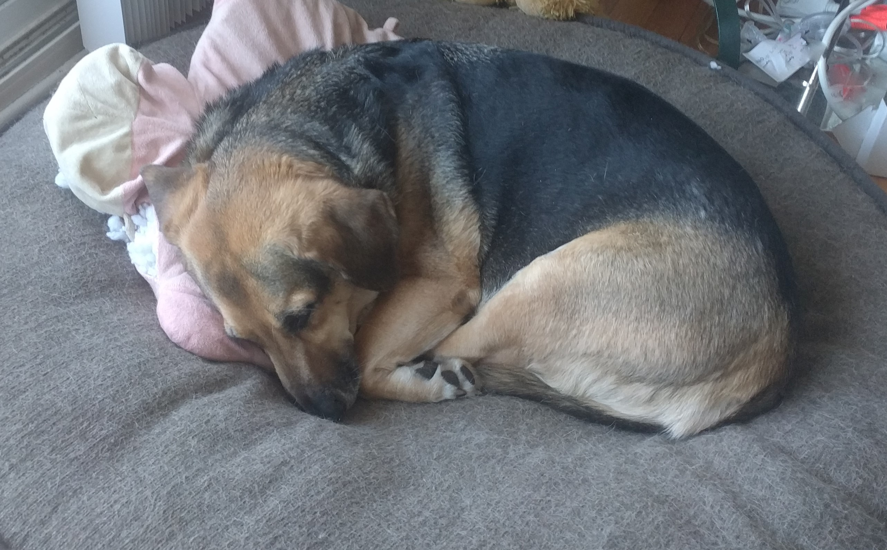

StrongLifts.com has a great in-depth guide to weight-lifting. Read the About page story to get motivated and start the StrongLifts 5x5 workout to build strength.
The NYT has a nice guide on how to start running. The key point is to run around 30 minutes three days a week.
I've found that playing sports is very fun, energizing, and promotes social bonding through teamwork. Find a group (or at least one person) to play with. Also, make time for deliberate practice alone (I like to web search "how to serve a tennis ball" in advance).
There's many free online videos for yoga, stretching, and home exercises to follow along. Or just dance to your favorite music (hyperlink coming).
Take a minute to find just one exercise to do this week and schedule it in your calendar (Example: I will do yoga in my room tomorrow at 11 am before lunch). If it's not scheduled, it won't get done. To double your likelihood of following through, please write down this statement: "I will do X exercise at Y time in Z location."
Sleep

In my competitive high-school, spending all-nighters studying or binge-watching Netflix shows was glorifed. For instance, an upper-classmen who got into Harvard told me he got only four hours of sleep per night. But that's why I'm likely couple inches shorter than had I gotten enough sleep (and eaten healthily).
I have realized that, except for a few critical crises, getting enough sleep regularly is the most important thing I can do to achieve a healthy, happy, and successful life.
By getting enough sleep and mental clarity, I can see that I can always cut down on unessential activities, and that the tradeoffs from lack of sleep are rarely worth it.
Like deliberate practice, what matters is quality -- not quantity -- of work. Sleep will define the quality of your day tomorrow (and forever).
There's good advice on getting better sleep. Some key points for me are:
- As I have greater energy in the morning, I regularly sleep from 10 PM - 6 AM.
- I get into "sleep prep mode" one hour before bed (at 9 pm), which involves
- Since blue light from screens will make my mind race for another hour in bed, I turn off all electronics (emails, news, videos) and notifications (use phone airplane mode if needed). (As I'm not a US President yet, I don't expect any urgent alerts at night to protect the country from a nuclear attack.)
- I also avoid thinking or talking about stressful or emotional topics then (I don't want to hear about my friend's betrayal a minute before I fall asleep).
- I drink minimal fluids (to minimize potty breaks at night).
- I meditate for five minutes in bed to calm the mind from rapid thoughts.
- Unlike the dog in the photo above, sleep in a straight tall posture.
- Despite the asian dinner feast tradition, don't eat huge meals in the evening (finish eating by 7 pm). Wait at least 30 min after eating before taking nap to prevent digestive problems.
- Work hard and exercise earlier in the day so that I get tired at nighttime.
- Take power naps to defeat the mid-afternoon slump. With my eye mask and ear plugs on in a private place, I set a timer for 25 minutes to nap after lunch. Avoid taking naps longer than 40 min or else you'll feel groggy from awakening from a heavier sleep cycle.
- Drink water after awakening in the morning for greater energy.
Posture